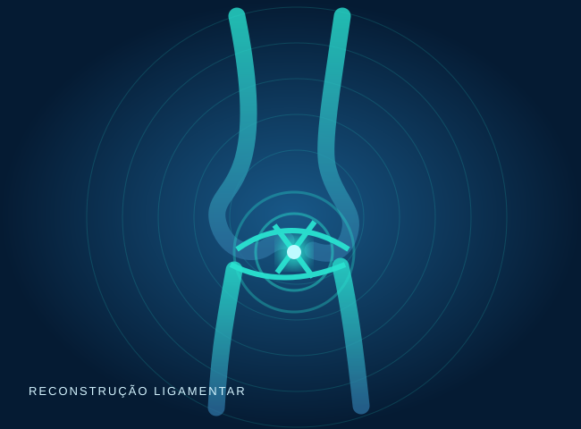

01
Entender a instabilidade
Sintomas, exame físico e imagem quando indicada.
Investigação da lesão ligamentar e planejamento para recuperar estabilidade e confiança.


A ruptura do ligamento cruzado anterior pode provocar instabilidade e insegurança nos movimentos. A conduta considera sua rotina, objetivos e lesões associadas.
A reabilitação é tão importante quanto a técnica escolhida.
Sintomas, exame físico e imagem quando indicada.
Reabilitação isolada ou reconstrução em casos selecionados.
Etapas de recuperação guiadas pela função e evolução.
A avaliação clínica ajuda a diferenciar causas e definir o cuidado apropriado.
Conversar com a equipe ↗Decisões clínicas exigem conversa, planejamento e acompanhamento — não fórmulas prontas.
Confirmar a lesão e identificar instabilidade e danos associados.
Definir, quando indicado, técnica e tipo de enxerto.
Evoluir força, mobilidade e controle neuromuscular antes do retorno esportivo.


Informações gerais; a orientação individual depende de consulta.
Não. A escolha depende da instabilidade, atividade física, lesões associadas e metas pessoais.
O retorno deve considerar força, estabilidade, testes funcionais e liberação médica, não apenas o tempo de cirurgia.
A escolha é individualizada conforme anatomia, modalidade esportiva, histórico e discussão com o cirurgião.
Converse com um especialista em cirurgia do joelho e avalie o melhor caminho.

 Dr. Gabriel Lins Abib e Dr. Ricardo QueirozOrtopedia especializada em joelho
Dr. Gabriel Lins Abib e Dr. Ricardo QueirozOrtopedia especializada em joelho